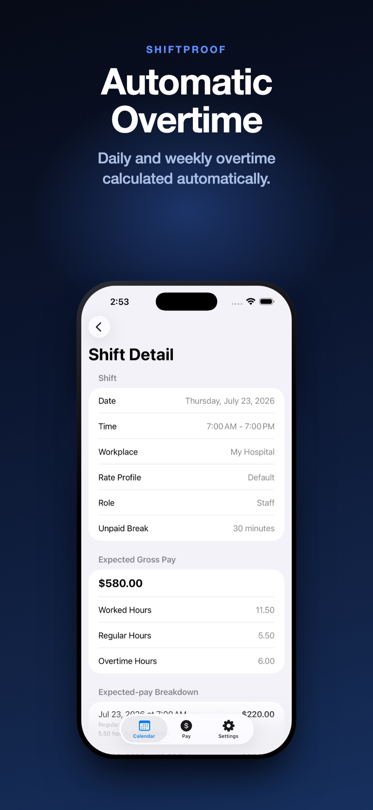

Overtime confuses people less because the math is hard and more because there's more than one kind of overtime rule, and it's easy to assume you know which one applies to you. Here's how the most common version — weekly overtime — actually works.
Under the federal Fair Labor Standards Act (FLSA), most hourly employees are entitled to overtime pay for hours worked beyond 40 in a single workweek. The workweek itself is a fixed, recurring 7-day period — it's set by the employer and doesn't have to run Monday through Sunday; it just has to be consistent.
Hours are counted per workweek, not per pay period. If your pay period is two weeks long, overtime is still calculated separately for each of the two workweeks inside it, then added together — not by totaling all 80-some hours across the whole period at once.
Federal law uses a weekly threshold only. Some states layer their own daily overtime rules on top of that — for example, requiring overtime pay for any hours worked beyond 8 in a single day, regardless of the weekly total. Where a daily rule applies, an employee can be entitled to daily overtime, weekly overtime, or occasionally both, depending on the exact schedule worked.
This is the single most common reason someone's own overtime math disagrees with their paycheck: assuming a weekly-only rule when a daily rule also applies, or the reverse. There isn't a shortcut here — the specific rule depends on the state and sometimes the industry, and it's worth confirming directly with your employer or your state's labor department rather than assuming.
Take a single shift: 7:00 a.m. to 7:00 p.m., a 30-minute unpaid break, so 11.5 hours worked. If that shift is the one that pushes the week over 40 hours, only the hours past the threshold count as overtime — the rest of the shift is still regular time:
Notice that the split (5.50 regular / 6.00 overtime) depends on how many hours were already worked earlier in the same week — the same shift could be entirely regular time, or entirely overtime, depending on what came before it.

If your paycheck's overtime hours don't match what you expected, check these first: whether your employer's workweek actually starts on the day you assumed, whether every shift in the week was counted (a missed shift shifts the whole split), and whether a daily overtime rule applies in your state on top of the weekly one. Only after ruling those out is it worth raising the specific week and shifts with your employer or payroll department.
ShiftProof calculates weekly overtime only, against a threshold you set (40 hours by default). As you add shifts, it tracks the running weekly total and splits each new shift into regular and overtime hours automatically, the same way as the example above. ShiftProof does not calculate daily overtime — if your state or employer uses a daily rule, expect ShiftProof's expected gross pay to differ from your actual paycheck on shifts that trigger it, and verify those specific shifts with your employer.
Set your weekly threshold once. Every week's split, done automatically.
Download ShiftProof FreeThis guide is general information, not legal or payroll advice. Overtime rules vary by state and sometimes by industry — verify the specific rules that apply to you with your employer, your state's labor department, or a licensed professional.